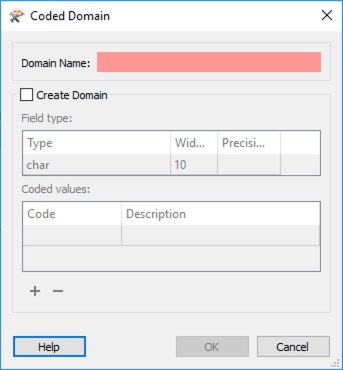
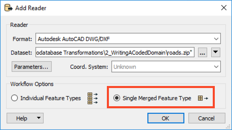
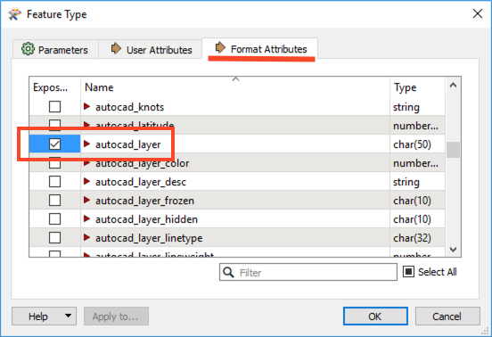

When this option is checked, an additional attribute will be added called
_<attribute>_resolved_ which contains the textual description of the coded attribute value.After completing this unit, you’ll be able to:
This unit's exercise uses the Esri Geodatabase (File Geodb) reader/writer, which requires a licensed version of ArcGIS. For more information on required ArcGIS license levels, please see Required ArcGIS License Types for FME Geodatabase Formats.
A domain is a set of rules that define permitted values for an attribute. They are used to constrain data values to ensure data integrity. A domain is defined in a geodatabase as a unique entity and can be applied to any attribute in any feature class within the geodatabase that contains the domain definition.
There are two types of geodatabase domains (coded and range domains). FME supports both. A coded domain is a list of multiple valid values, while a range domain is a single permitted range of numeric values.
When reading a geodatabase, FME has an option to resolve domains.
When this option is checked, an additional attribute will be added called _<attribute>_resolved_ which contains the textual description of the coded attribute value.
FME has the capability to write to existing or create new geodatabase tables. As such, when writing geodatabase domains, the workflow requirements will tend to fall under one of two scenarios:
These scenarios will be controlled primarily by the following writer parameters:
If you write an attribute named following the _<attribute>_resolved convention, and containing description values instead of codes, FME will automatically write those values as codes to <attribute> in the geodatabase. You should not directly map your _<attribute>_resolved attribute to <attribute> or you will incorrectly be writing the description values instead of codes. Also, note that _<attribute>_resolved will not actually appear on your writer feature type schema. It will still be written. We'll illustrate this in the upcoming example under Option #2.
Any data written to an existing domain field is, by default, inserted as normal. As the table already exists, its attribute(s) will already be associated with the required domain, and there is no need to set any parameter to define this connection.
However, if you wish to validate incoming data – for instance, compare it to a domain definition to ensure it has valid attribute values – you must set the writer parameter Validate Features to Write to Yes. If the validation parameter is set to No, the data will pass into the Geodatabase without error, despite some data values not meeting domain rules.
When creating a new table that uses an existing domain, the attribute that needs to be associated with a domain should be given the data type coded_domain or range_domain (depending on its type) in the schema definition. One would then click the Edit button in the attribute width field and enter the name of the existing domain in the Domain Name section.

There are a few limitations regarding domain writing.
Firstly, it is impossible to write to an existing table and either create an association with an existing domain or create an entirely new domain. This association is wrapped up in the table definition, and FME cannot change an existing table definition. You would need to drop the existing table and re-create it entirely to do this.
Secondly, for the same reason stated above, creating a domain is a one-off translation. You would set the data type to coded_domain/range_domain for the initial process, but subsequent loads of the data should be done with the data type changed back to the actual type of data (char, integer, etc.).
Finally, creating a domain dynamically is impossible (i.e., the domain definition should be manually defined before execution and not defined during the workspace process).
The following exercise demonstrates Scenario 2: writing to a new table and using an existing domain through a template.
1. Read Source Data
Create a blank workspace in FME Workbench (2021.1 or later), add an Autodesk AutoCAD DWG/DXF writer to the canvas, and set Dataset to the Roads.zip dataset provided in the Resources section above; you can leave the file zipped.
Change Workflow Options to Single Merged Feature Type. Then click Parameters.
In the parameters, set Group Entities By to Attribute Schema, then click OK twice to add the reader. Once the reader has been added to the workspace canvas, double-click on the reader feature type to open the parameters. Switch to the Format Attributes tab and enable
Once the reader has been added to the workspace canvas, double-click on the reader feature type to open the parameters. Switch to the Format Attributes tab and enable autocad_layer, then click OK.

2. Inspect Source Data
Run the workspace and inspect the feature cache of the roads data. It should look like this:

The values subject to the destination geodatabase domain definition can be seen in the autocad_layer format attribute.
3. Map Attributes
There are two ways to map attributes to domains, either by domain code or by resolved domain values. If following along with the exercise, only use one method.
Next, we will use an AttributevalueMapper to map the incoming values from the source DWG to the domain codes we will apply to the domain definition.
Add an AttributeValueMapper to the canvas and connect it to the <ALL> reader feature type. In the parameters, set the Source Attribute to autocad_layer and enter StreetCategory as the Destination Attribute. Enter 99 as the Default Value as this will be the domain code we will use for Unknown street types.
In the Value Mapping part of the parameters dialog, enter the values as seen in the table.
| Source Value | Destination Value |
|---|---|
| Arterial | 1 |
| Secondary | 2 |
| Residential | 3 |
| Private | 4 |
| NonCity | 5 |
| Other | 6 |
| Collector | 7 |
| Unknown | 99 |

As an alternative to the step described above, one could instead use an AttributeManager, to take the value from the source DWG file and map it to the domain definition based on the domain definitions resolved value. To do so, add an AttributeManager to the workspace and open the parameters dialog. Rename autocad_layer to StreetCategory_resolved - the resolved version of the domain.
 The above tends to be most applicable when your workflow falls under Scenario #1 (writing to an existing table using an existing domain definition) or Scenario #2 (writing to a new table in the geodatabase using an existing domain). In both scenarios, one assumes that one does not know the domain codes contained in the domain definition and instead knows the resolved value.
The above tends to be most applicable when your workflow falls under Scenario #1 (writing to an existing table using an existing domain definition) or Scenario #2 (writing to a new table in the geodatabase using an existing domain). In both scenarios, one assumes that one does not know the domain codes contained in the domain definition and instead knows the resolved value.
4. Write Features and Create Domain
Add an Esri Geodatabase (File Geodb) writer to the canvas and browse to a location to save the geodatabase. Leave the Feature Class or Table Definition set to Copy from Reader, then open the parameters.
In the parameters, enable Overwrite Existing Geodatabase, then browse to the RoadsTemplate.gdb for the Template File Geodatabase. Next, expand the Advanced section and set Validate Features to Write to Yes. This setting will ensure that the incoming source data adheres to our domain definition. Then click OK twice to add the writer. Connect the writer to the AttributeValueMapper (option one above) or the AttributeManager (option two above), then open the writer feature type parameters.
Connect the writer to the AttributeValueMapper (option one above) or the AttributeManager (option two above), then open the writer feature type parameters.
In the feature type parameters, change the Feature Class or Table Name to something more meaningful such as Streets.
Next, switch to the User Attributes tab and rename autocad_layer to StreetCategory and click OK.
5. Save and Run the Workspace
Save the workspace and then run it. View your output in ArcMap.